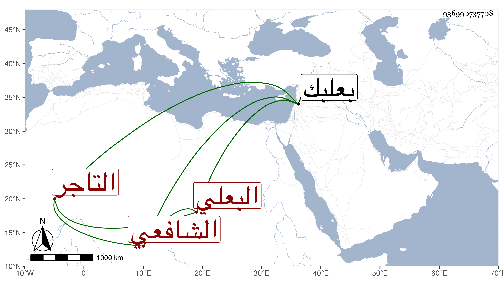

0902Sakhawi.DawLamic.ITO20230111-ara1.EIS1600.936990737708
Biography ID: 936990737708
إبراهيم بن عبد الله بن إسحاق صارم الدين بن الجمال بن العماد البعلي الشافعي التاجر ويعرف بابن العماد . ولد في سنة تسع وثمانين وسبعمائة ببعلبك ونشأ بها فقرأ القرآن عند ابن قاضي المنيطرة وسمع البخاري على الزين عبد الرحمن بن الزعبوب في سنة خمس وتسعين بجامع بعلبك أنابه الحجار سنة سبع عشرة وسبعمائة وحدث باليسير سمع منه الفضلاء وقرأت عليه ببعلبك المائة لابن تيمية وكان خيرا نير الشيبة جميل الهيئة يتكسب بالتجارة مات في .
